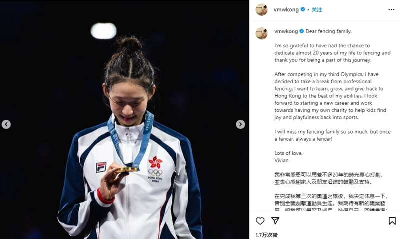

在之前的巴黎奥运女子个人重剑金牌赛中，中国香港选手江旻憓夺得冠军。今日江旻憓发文，宣布休息一下，暂时告別全职击剑运动员生涯。
江旻憓发文：我非常感恩可以用差不多20年的时光专心打剑，并衷心感谢家人及朋友沿途的鼓励及支持。
在完成我第三次的奥运之旅后，我决定休息一下，告别全职击剑运动员生涯。我期待有新的职业发展，让我可以学习及成长，装备自己，回馈中国香港；同时累积经验，为设立自己的慈善基金做好准备，让小朋友重拾运动的乐趣。
我很感激剑击团队每一位给予我的无限支持。我们必定会在剑击的路上再相遇。 Once a fencer, always a fencer !
Advertisements